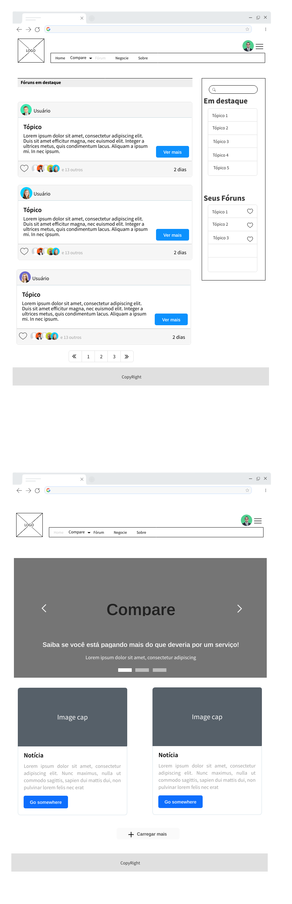

Introdução
Informações básicas do projeto como nome e membros da equipe.
Informações Gerais
- Projeto: Preço Mestre
- Repositório GitHub: Preço Mestre
- Membros da equipe:
Contexto
No vasto e dinâmico mercado de tecnologia, encontrar o produto ideal para atender às nossas necessidades individuais tornou-se uma tarefa cada vez mais desafiadora. Com uma infinidade de opções disponíveis, desde laptops ultraportáteis até desktops de última geração, os consumidores enfrentam uma verdadeira encruzilhada ao tentar decidir qual dispositivo se adequa melhor ao seu estilo de vida, orçamento e exigências específicas. Essa dificuldade é agravada pela rápida evolução tecnológica e pela proliferação de especificações e recursos técnicos complexos, que muitas vezes deixam os consumidores confusos e sobrecarregados diante das inúmeras escolhas disponíveis. Além disso, as necessidades individuais de cada pessoa variam consideravelmente, desde estudantes que buscam um dispositivo para suas atividades acadêmicas até profissionais que necessitam de alto desempenho para suas tarefas diárias no trabalho.
Problema
Dificuldade de escolher por falta de conhecimento técnico do usuário. Preocupações com a relação do custo benefício algumas pessoas podem se sentir sobrecarregadas tentando equilibrar o preço do produto com seus recursos e funcionalidades. Dificuldade de escolher o melhor produto com tantos modelos e marcas pode ser difícil de escolher qual produto atende melhor às suas necessidades.
Objetivos
Ajudar ao público-alvo (adultos e adolescentes) a encontrar o seu produto ideal. Quando alguém procura um produto tecnológico para comprar, geralmente tem vários objetivos em mente, dependendo das necessidades individuais e das circunstâncias. Atender a uma necessidade específica: a pessoa pode estar procurando um produto tecnológico para atender a uma necessidade específica, como um novo smartphone para substituir um antigo que está quebrado ou desatualizado. Melhorar a produtividade: alguns compradores podem estar em busca de dispositivos ou softwares que os ajudem a ser mais produtivos em seu trabalho ou estudos. Acompanhar as tendências: algumas pessoas podem querer estar atualizadas com as últimas tendências em tecnologia e, portanto, procuram produtos que representem os avanços mais recentes no mercado. Relação custo-benefício: para muitos compradores, o objetivo é encontrar um produto que ofereça uma boa relação custo-benefício, ou seja, que atenda às suas necessidades sem estourar o orçamento. Status social: em alguns casos, a busca por produtos tecnológicos pode ser motivada pelo desejo de status social, onde a posse de determinados dispositivos ou marcas é vista como um símbolo de prestígio ou sucesso.
Justificativa
A escolha para trabalhar com essa aplicação veio de barreiras que nós mesmos, os desenvolvedores, encontramos, a procura pelo produto certo e preço justo as vezes tomam o tempo de pessoas que não o tem e muitas vezes a diferença de preço que pode ser encontrada pela procura faz diferença no fim do mês. Então queremos facilitar ese proceso, em uma aplicação que através de usuários formem uma base de produtos com diversos preços, reviews, lojas comerciando, e essa pessoa que não tem o tempo de ir a fundo no item que quer comprar, nós podemos te ajudar.
Público-alvo
Adolescentes de 12 a 18 anos (para viver uma experiência melhor nos games). Adultos com mais de 18 anos (para viver uma melhor experiência no trabalho).
Concepção (Design Thinking)
Detalhes do processo de discovery do projeto.
Apresente o processo de discovery do projeto. Com foco na experiência do usuário, esse processo abrange a compreensão do contexto do problema e das características do usuário, a definição do problema, a geração de ideias, a prototipagem e a elaboração de uma proposta de solução
Processo de Design Thinking
O arquivo que se segue apresenta o resultado desse processo.
Apresente o processo de Design Thinking realizado pelo grupo e documentado por meio do software Miro. No documento apresentado, devem ser incluídos: (1) a matriz CSD, (2) o mapa de stakeholders, (3) as personas, (4) as respectivas propostas de valor e (5) o processo de ideação identificando as ideias levantadas e sua priorização.
Especificações do Projeto
Documentação das especificações do projeto.
Apresente as especificações do projeto, incluindo as histórias de usuário e os requisitos funcionais e não funcionais.
Histórias de Usuários
Com base na análise das personas foram identificadas as seguintes histórias de usuários:
Apresente aqui as histórias de usuário que são relevantes para o projeto de sua solução. As Histórias de Usuário consistem em uma ferramenta poderosa para a compreensão e elicitação dos requisitos funcionais e não funcionais da sua aplicação. Se possível, agrupe as histórias de usuário por contexto, para facilitar consultas recorrentes à essa parte do documento.
| Entrevistador: | Olá, Eduardo. Obrigado por ter aceitado essa entrevista. Você poderia me contar um pouco sobre sua experiência com jogos e tipos de aparelhos que você utiliza? | |
|---|---|---|
| Eduardo: | Olá,Eu jogo há muitos anos, comecei quando pequeno, atualmente eu uso principalmente o meu PC, porém tenho um console da antiga geração, no qual possuo alguns jogos não tão novos. | |
| Entrevistador: | Agora você poderia me contar alguns desafios que você enfrenta ao tentar encontrar aparelhos para melhorar sua experiência? | |
| Eduardo: | A maior parte do desafio está relacionada ao custo dos aparelhos e a confiabilidade. Nem sempre tenho o dinheiro para melhorar as peças do meu PC ou comprar um console de nova geração. Por exemplo, existem muitas peças à venda pela aliexpress ou pela shopee, porém mesmo sendo mais baratas, o imposto exigido e a possível chance de não entregar, me deixa receoso de fazer a compra. Costumo gastar um bom tempo procurando algum periférico que quero, faço bastante pesquisa, tanto de preço quanto de qualidade. | |
| Entrevistador: | Já encontrou problema com disponibilidade de produtos? | |
| Eduardo: | Na maioria das vezes os produtos mais populares estão em falta, isso costuma acontecer com produtos em promoção. É raro encontrar periféricos e jogos em promoção e quando aparecem, somem muito rápido. | |
| Entrevistador: | Já pensou em procurar outras alternativas para encontrar o que busca? | |
| Eduardo: | Apesar de existirem lojas dedicadas à informática e tecnologia, nem sempre possuem o melhor preço. Fora disso, não existe muita vitrine para esse tipo de produto, mas já procurei produtos usados, através da olx, porém sempre complicado ter certeza da integridade. | |
| Usuário do sistema | Procurar produtos | Encontrar os produtos de forma mais fácil e com preços melhores |
| Administrador | Monitorar uso do sistema | Ter controle sobre a área de fórum e seus posts, identificar incoerência nos posts |
Requisitos
As tabelas que se seguem apresentam os requisitos funcionais e não funcionais que detalham o escopo do projeto.
Com base nas Histórias de Usuário, enumere os requisitos da sua solução. Classifique esses requisitos em dois grupos:
- Requisitos Funcionais (RF): correspondem a uma funcionalidade que deve estar presente na plataforma (ex: cadastro de usuário).
- Requisitos Não Funcionais (RNF): correspondem a uma característica técnica, seja de usabilidade, desempenho, confiabilidade, segurança ou outro (ex: suporte a dispositivos iOS e Android).
Lembre-se que cada requisito deve corresponder à uma e somente uma característica alvo da sua solução. Além disso, certifique-se de que todos os aspectos capturados nas Histórias de Usuário foram cobertos.
Requisitos Funcionais
| ID | Descrição do Requisito | Prioridade |
|---|---|---|
| RF-001 | Página inicial com informações sobre o projeto | ALTA |
| RF-002 | Tabela com os produtos | MÉDIA |
| RF-003 | Usuáro fazer cadastro e login | ALTA |
| RF-004 | Adicionar produtos | MÉDIA |
| RF-005 | Visualizar todos os produtos | MÉDIA |
| RF-006 | Pesquisar em todos os produtos | BAIXA |
| RF-007 | Visualizar todos os meus produtos | MÉDIA |
| RF-008 | Fórum com tópicos | MÉDIA |
| RF-009 | Adicionar tópicos | MÉDIA |
| RF-010 | Acessar tópicos | BAIXA |
| RF-011 | Comentar tópicos | BAIXA |
| RF-012 | Página Sobre | BAIXA |
| RF-013 | Fale conosco | BAIXA |
Requisitos Não-Funcionais
| ID | Descrição do Requisito | Prioridade |
|---|---|---|
| RNF-001 | A tabela de produtos deve ser de fácil interpretação | BAIXA |
| RNF-002 | Deve processar requisições do usuário em no máximo 3s | ALTA |
| RNF-002 | Site deve poder ser acesado em todos os navegadores suportados | MÉDIA |
| RNF-002 | Adicionar produtos não deve demorar mais que 3s | ALTA |
| RNF-002 | O site deverá ser responsivo permitindo a visualização em um dispositivo móvel de forma adequada | ALTA |
| RNF-002 | O site deve ter bom nível de contraste entre os elementos da tela em conformidade | ALTA |
Projeto de Interface
Artefatos relacionados com a interface e a interacão do usuário na proposta de solução.
Apresente a ideia de interface que está sendo prevista para o projeto. Inclua os wireframes, o user/screen flow e o protótipo interativo.
User/Screen Flow e Protótipo interativo
Artefatos relacionados com a interface e a interacão do usuário na solução proposta.
O fluxo de usuário (User Flow) é uma técnica que permite ao desenvolvedor mapear todo fluxo de
telas do site ou app. Essa técnica funciona para alinhar os caminhos e as possíveis ações que o
usuário pode fazer junto com os membros de sua equipe. 
Um protótipo interativo apresenta o projeto de interfaces e permite ao usuário navegar pelas
funcionalidades como se estivesse lidando com o software pronto. Veja o exemplo a seguir.
...... COLOQUE AQUI O DIAGRAMA DE USER FLOW E O LINK PARA O PROTÓTIPO INTERATIVO ......
Wireframes
Protótipo de telas do sistema em baixa fidelidade (rascunhos).
Os Wireframes são protótipos das telas da aplicação usados em design de interface para sugerir a
estrutura de um site web e seu relacionamentos entre suas páginas. Um wireframe web é uma ilustração
semelhante ao layout de elementos fundamentais na interface. 

Metodologia
Detalhes sobre a organização do grupo e o ferramental empregado.
Nesta parte do documento, você deve apresentar a metodologia adotada pelo grupo, descrevendo o processo de trabalho baseado nas metodologias ágeis, a divisão de papéis e tarefas, as ferramentas empregadas e como foi realizada agestão de configuração do projeto via GitHub.
Coloque detalhes sobre o processo de Design Thinking e a implementação do Framework Scrum seguido pelo grupo. O grupo poderá fazer uso de ferramentas on-line para acompanhar o andamento do projeto, a execução das tarefas e o status de desenvolvimento da solução.
Ferramentas
Relação de ferramentas empregadas pelo grupo durante o projeto.
Liste as ferramentas empregadas no desenvolvimento do projeto, justificando a escolha delas, sempre que possível. Inclua itens como: (1) Editor de código, ferramentas de comunicação, ferramentas de diagramação, plataformas de hospedagem, entre outras.
| Ambiente | Plataforma | Link de Acesso |
|---|---|---|
| Processo de Design Thinking | Miro | https://miro.com/XXXXXXXEXEMPLO |
| Repositório de código | GitHub | https://github.com/ICEI-PUC-Minas-PPLCC-TI/ti-1-ppl-cc-m-20241-1-dificuldades-de-encontrar-produtos |
| Hospedagem do site | Heroku | https://XXXXXXX.herokuapp.comEXEMPLO |
| Protótipo Interativo | MavelApp ou Figma | https://figma.com/XXXXXXXEXEMPLO |
Gestão do Projeto
Divisão de papéis no grupo e apresentação da estrutura da ferramenta de controle de tarefas .
Apresente a divisão de papéis e tarefas entre os membros do grupo. Informe quem é o Scrum Master, o Product Owner e os desenvolvedores. Informe também quem é o responsável pela documentação do projeto.
Apresente o quadro de gerenciamento do time (Kanban), seu formato e as experiências na utilização dessa ferramenta (GitHub Projects)
Decidimos que por não termos experiências, o melhor a se fazer era quando necessário assumirmos os papéis de nossas respectivas funções, seja ScrumMaster, ProjectOwner e desenvolvedor. Sentimos que seria o importante para gerar experiências em todas as áreas
Controle de Versão
Estrutura do fluxo de trabalho no ambiente do GitHub.
Discuta como a configuração do projeto foi feita na ferramenta de versionamento (GitHub). Exponha
como a gerência de tags, merges, commits e branchs é realizada. Discuta como a gerência de issues foi
realizada.

Optamos por apenas usar a branch master para não nos confundirmos com problema de conflito de merge entre branches
Solução
Esta seção apresenta todos os detalhes da solução criada no projeto.
Apresente cada uma das funcionalidades que a aplicação fornece tanto para os usuários quanto aos administradores da solução.
Inclua, para cada funcionalidade, itens como: (1) titulos e descrição da funcionalidade; (2) Estrutura de dados associada; (3) o detalhe sobre as instruções de acesso e uso.
Video do Projeto
O vídeo a seguir traz uma apresentação do problema que a equipe está tratando e a proposta de solução.
O video de apresentação é voltado para que o público externo possa conhecer a solução. O formato é livre, sendo importante que seja apresentado o problema e a solução numa linguagem descomplicada e direta.
Utilize o recurso de compartilhamento via embed e inclua o vídeo logo abaixo.
Funcionalidades
Esta seção apresenta as funcionalidades da solução.
Apresente cada uma das funcionalidades que a aplicação fornece tanto para os usuários quanto aos administradores da solução.
Inclua, para cada funcionalidade, itens como: (1) titulos e descrição da funcionalidade; (2) Estrutura de dados associada; (3) o detalhe sobre as instruções de acesso e uso.
Funcionalidade 1 - Cadastro de Produto
Permite o cadastro de produto, incluindo seu nome, preço, loja vendido e observação
- Estrutura de dados: Produtos
- Instruções de acesso:
- Abra o site e efetue o login
- Acesse o menu Compare
- Em seguida, escolha a opção Adicione
Funcionalidade 2 - Login
Permite o logar no site
- Estrutura de dados: Login
- Instruções de acesso:
- Abra o site cadastre-se
- Fecha a aba de cadastro
- Efetue login
Funcionalidade 3 - Tabela
Local onde os produtos cadastrados pelos usuários são exibidos de forma simples
- Estrutura de dados: Tabela
- Instruções de acesso:
- Abra o site e efetue o login
- Acesse o menu Compare
- Em seguida, escolha a opção Tabelas
Funcionalidade 4 - Produtos
Tela que demonstra os produtos de forma detalhada
- Estrutura de dados: Produtos
- Instruções de acesso:
- Abra o site e efetue o login
- Acesse o menu Compare
- Em seguida, escolha a opção Produtos
Funcionalidade 5 - Fórum
Fórum que encoraja compartilhar dúvidas sobre os produtos
- Estrutura de dados: Fórum
- Instruções de acesso:
- Abra o site e acesse o menu Fórum
Estruturas de Dados
Descrição das estruturas de dados utilizadas na solução com exemplos no formato JSON.
Apresente as estruturas de dados utilizadas na solução tanto para dados utilizados na essência da aplicação quanto outras estruturas que foram criadas para algum tipo de configuração
Nomeie a estrutura, coloque uma descrição sucinta e apresente um exemplo em formato JSON.
Estrutura de Dados - Produtos
Produtos cadastrados
{
user: { id: 1, name: "Maria da Silva" },
name: "Notebook",
enterprise: "Dell",
price: 2500,
notes: "Inclui 1 ano de suporte técnico gratuito."
}
Estrutura de Dados - Usuários
Registro dos usuários do sistema utilizados para login e para o perfil do sistema
{
"name": "Lucas",
"login": "Admin",
"email": "lucas@gmail.com",
"password": "123"
}
Estrutura de Dados - Tópicos
Participantes dos tópicos
{
id: 1,
author: "Marcos",
date: Date.now(),
content: "Olá"
}
Módulos e APIs
Esta seção apresenta os módulos e APIs utilizados na solução.
Apresente os módulos e APIs utilizados no desenvolvimento da solução. Inclua itens como: (1) Frameworks, bibliotecas, módulos, etc. utilizados no desenvolvimento da solução; (2) APIs utilizadas para acesso a dados, serviços, etc.
Images:
- Unsplash - https://unsplash.com/EXEMPLO
Fonts:
- Icons Font Face - https://fontawesome.com/EXEMPLO
Scripts:
- jQuery - http://www.jquery.com/
- Bootstrap 4 - http://getbootstrap.com/
FAQ
Perguntas e respostas comuns associadas ao projeto.
Apresente uma lista de perguntas e respostas comuns associadas ao projeto. Inclua perguntas como: (1) detalhes de acesso e uso do projeto; (2) informações sobre a instalação e configuração da aplicação; (3) questões sobre a manutenção da aplicação; (4) detalhes sobre a integração da aplicação com outros sistemas; (5) questões sobre a segurança da aplicação.
Referências Bibliográficas
Esta seção apresenta as referências bibliográficas utilizadas no projeto.
Apresente as referências bibliográficas utilizadas no projeto. Inclua itens como: (1) livros, artigos, tutoriais, etc. utilizados no desenvolvimento da solução; (2) links para sites, blogs, etc. utilizados no desenvolvimento da solução.
Teste de Software: Introdução, Conceitos Básicos e Tipos de Testes. Disponível em: https://blog.onedaytesting.com.br/teste-de-software/